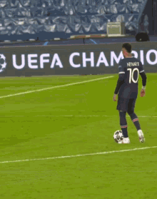
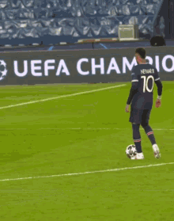

Le parcours de neymar
Neymar da Silva Santos Júnior, dit Neymar Jr, né le 5 février 1992 à Mogi das Cruzes au Brésil, est un footballeur international brésilien, qui évolue au poste d'attaquant au Al-Hilal SFC. Neymar est reconnu comme l'un des plus grands footballeurs brésiliens et mondiaux. Il a par ailleurs été élu meilleur footballeur sud-américain de l'année en 2011 et 2012. Son classement au Ballon d'Or est impressionnant : dixième en 2011, treizième en 2012, cinquième en 2013 et 2016. En 2011, il remporte le Bola de Ouro, récompensant le meilleur joueur du championnat brésilien.
Réalisations et récompenses
Le parcours en dents de scie de Neymar
Neymar commence tout d'abord sa carrière professionnelle au Santos FC en 2009. Avec Santos, il remporte la Coupe du Brésil, deux championnats de l'État de São Paulo, la Recopa Sudamericana et la Copa Libertadores. En 2013, il rejoint le FC Barcelone où il décroche le championnat d'Espagne et la Ligue des champions en 2015. Cette même année, il se hisse parmi les trois finalistes du Ballon d'Or aux côtés de Cristiano Ronaldo et Lionel Messi. Il devenait ainsi le premier Brésilien à atteindre cette position depuis Kaká en 2007. En 2017, Neymar rejoint le Paris Saint-Germain. Il devient ainsi le joueur le plus cher de l'histoire du football avec un transfert de 222 millions d'euros, surpassant le précédent record détenu par Paul Pogba. Neymar possède cependant d'autres records. Depuis qu'il a rejoint le club saoudien Al-Hilal, en août 2023, pour un montant estimé à 100 millions d'euros, Neymar est devenu le joueur le plus onéreux de l'histoire du football en cumulé. On atteint le montant fou de 400 millions d'euros en trois mouvements.
La fortune mirobolante de Neymar
Les partenariats de Neymar
Neymar voit sa réputation grandir rapidement à partir de ses 17 ans.
Il signe un contrat de 11 ans avec la société américaine de sport Nike en 2011.
Dans le même mois, Panasonic engage 2,4 millions de dollars pour s'assurer les services du Brésilien pendant deux ans.
Neymar a également signé des contrats d'images avec d'autres sociétés reconnues telles que Volkswagen, Red Bull et Santander.
Tous ces sponsors lui rapportent autour de 20 millions d'euros par an. En 2012, un magazine local l'annonce comme étant l'athlète
le plus commercialisé dans le monde, devant Lionel Messi et Cristiano Ronaldo.
Quelques semaines avant son transfert au PSG, la valeur de Neymar est estimée à 210 millions d'euros
par le Centre international d'économie du sport, soit la plus forte valeur dans le monde.
L'impact de son transfert au PSG est tel que d'après le collectif Paris United, le président Nasser al-Khelaïfi
a mené des négociations avec Gérald Darmanin. De son côté, Nicolas Sarkozy aurait sollicité ses contacts au ministère
des Sports pour que l'État facilite le montage financier.Le 12 septembre 2020, Neymar quitte Nike après 15 années de
collaboration pour l'équipementier allemand Puma. Selon certains spécialistes, le contrat du Brésilien
atteint au moins les 20 millions d'euros annuels.
Combien gagne Neymar ?
Pour recruter Neymar, le club saoudien a dû ouvrir grand son portefeuille avec des avantages XXL, à commencer par un avion privé et une maison de rêve. L'attaquant s'est engagé pour deux ans et a pu toucher une prime de signature de 20 millions d'euros, selon Capital. En plus de ces avantages, son salaire serait passé de 56 millions d'euros brut par an au PSG, à 151 millions en Arabie saoudite, selon les chiffres révélés par les clubs concernés. D'après Foot Mercato, Neymar toucherait entre 300 et 400 millions d'euros répartis sur la durée de son contrat. Celui-ci a également un contrôle total sur ses droits à l'image. De plus, chaque victoire d'Al-Hilal lui rapporte environ 80 000 euros. Chaque story ou post publié sur les réseaux sociaux pour faire la promotion de l'Arabie saoudite devrait lui permettre de toucher approximativement 500 000 euros.
Neymar sous les polémiques

Le 14 mars 2018, l'attaquant brésilien est critiqué sur les réseaux sociaux après la publication d'un tweet
rendant hommage à Stephen Hawking accompagné d'une photo où il est assis en fauteuil roulant. Ses fans jugent
de mauvais goûts la comparaison entre le handicap neuromoteur du scientifique décédé et la blessure à la cheville
du joueur du PSG.
Lors de la saison 2021-2022 au PSG, Neymar démarre la saison avec une prise de poids qui fait polémique. Il confirme
sa position quant à son refus d'améliorer son hygiène de vie. Ensuite, il est une fois de plus absent durant l'hiver
et n'aura donc disputé cette saison que la moitié des matchs possibles avec son club.
Chaque année, le joueur a pour habitude de fêter en grande pompe son anniversaire. Lors de ses années parisiennes
entrecoupées par des blessures importantes, celles-ci suscitèrent souvent la polémique, allant jusqu'à provoquer
le courroux de ses dirigeants sportifs. Malgré ces polémiques sur son hygiène de vie, Neymar a réaffirmé en janvier
2021 sur TF1 qu'il ne renoncerait jamais à son goût pour la fête.
La carrière internationale de Neymar
En 2011, à seulement 19 ans, Neymar gagne le championnat d'Amérique du Sud des moins de 20 ans avec la sélection brésilienne. Pendant l'année 2012, il décroche la médaille d'argent aux Jeux olympiques d'été, le Brésil s'inclinant en finale face au Mexique. En 2013, il remporte la Coupe des confédérations, battant l'Espagne, championne du monde en titre, en finale. Neymar est élu meilleur joueur de ce tournoi.Lors de la Coupe du monde 2014, il se blesse en quart de finale et ne peut empêcher la lourde défaite de ses coéquipiers face à l'Allemagne (1-7) en demi-finale.En 2016, il offre à la sélection brésilienne son premier titre olympique en marquant sur coup franc et en transformant le tir au but décisif en finale contre l'Allemagne. Il signe également le but le plus rapide de l'histoire des Jeux olympiques, après 14 secondes en demi-finale contre le Honduras. Le Brésil est éliminé en quart de finale lors des Coupes du monde 2018 et 2022.Capitaine de l'équipe nationale depuis 2014, Neymar est le meilleur buteur de l'histoire de la Seleção avec 79 buts, dépassant ainsi Pelé.


 
